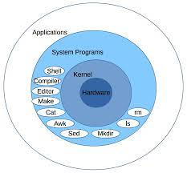
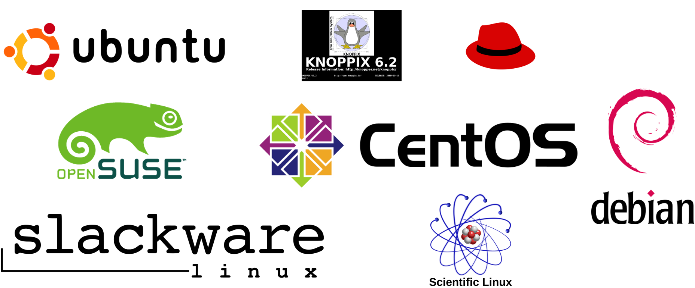
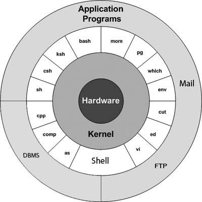
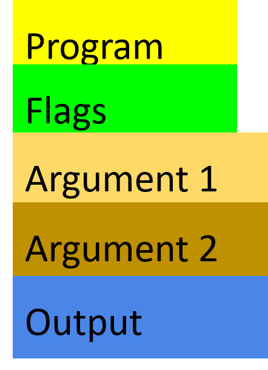
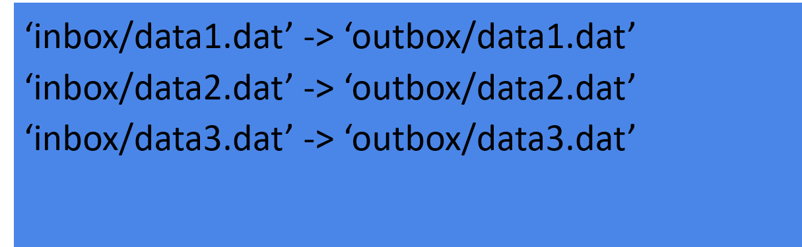

Linux
What is Linux?
Daily speaking: The Linux Operating system is a UNIX like and UNIX compatible Operating system.
Linux is a Kernel on which many different programs can run.
The shell (bash, sh, ksh, csh, tcsh and many more) is one such program

Actually, for it to be an OS, it is supplied with GNU software and other additions giving us the name GNU/Linux.
Linux has a multiuser platform at its base which means permissions and security comes easy.
Linux comes in different distributions, dialects or, say, flavours.
Uppmax runs CentOS

Using the command line
Command line with bash (Bourne Again Shell)
A Unix shell and command language.
Often default shell
The command-line interface: the bash prompt $
bash can be seen as a program that finds and runs other programs
bash is scripting language that is referred to as a shell
(because it sits around the kernel making it easy to interact with)

The prompt
[info]$ program word1 word2 word3 […]
[info] is configurable, and usually tells you who you are, on what system, and where in the file system.
Example:
[bjornc@rackham3 linux_tutorial]$
For changing info (only for advanced users!):
https://www.cyberciti.biz/tips/howto-linux-unix-bash-shell-setup-prompt.html (Links to an external site.)
The program to run is the first word
All words are separated by spaces
Program, flags, and files
Input to the program:
Flags: specific single letters or words that change the behaviour of a program.
Arguments: text given to the program when started, e.g. file names.
Terminal input: text given to the program while it runs.
Output from the program:
Most Linux programs output to the terminal.
Some programs also write to files.
Example bash command

Terminal screen shows

Tab Completion
Whenever you’re writing a path or filename on the bash prompt, you can strike the ‘tab’ key to ask Bash to complete what you’re writing.
Get in the habit of this — it will save you many hours!
Editing files
File/text editors
gedit (graphical user interface — GUI, needs X-server)
Also graphical editor within MobaXterm
nano (keyboard shortcuts shown on-screen)
Cheatsheet: http://staffwww.fullcoll.edu/sedwards/nano/UsefulNanoKeyCommands.html (Links to an external site.)
(^ = Ctrl, M = meta key)
(Windows M = Alt)
(On Mac: in the Terminal.app go to Preferences -> Settings -> Keyboard and turn on “Use option as meta key”: then M = Alt
vim (fast and powerful, once you learn it)
on UPPMAX started with command “vi”
Insert mode (type like normal text editor. Press i for insert mode)
Command mode (give commands to the editor to get things done . Press ESC for command mode)
Cheatsheet: https://coderwall.com/p/adv71w/basic-vim-commands-for-getting-started (Links to an external site.)
gvim vim with a GUI, lots of features very Fast
emacs (fast and powerful, once you learn it)
Cheatsheet: https://www.gnu.org/software/emacs/refcards/pdf/refcard.pdf (Links to an external site.)
(C = Ctrl)
also With GUI
$ emacs –nw
keeps you in terminal window.
When starting the graphical versions, add “&” to be able to use the command line while program is open.
$ gedit &
If not, you can Ctrl+z and type bg to send program to background.
Try them out and pick one favorite editor!
Typical sources of error
Capitalization matters in file names and program names
Spaces matter.
Always have a space after the program name.
Don’t add spaces within file names.
Check that you are in the right place in the file system.
File permissions. Check that the right read,write and execute permission are set.
Caution!!
Some words of warning:
There is no undo for
copy (cp),
move (mv), and
remove (rm).
Beware of overwriting files and deleting the wrong ones.
Tip: make “rm” ask if you really want to erase:
Within a session: Type in the command prompt
alias rm=‘rm -i’
Override asking with
rm –f <>
Edit file “.bashrc” in /home directory by adding the alias line for this to start everytime.
This will also work for mv and cp!
If you do destroy your data, email UPPMAX support, we may be able to help.